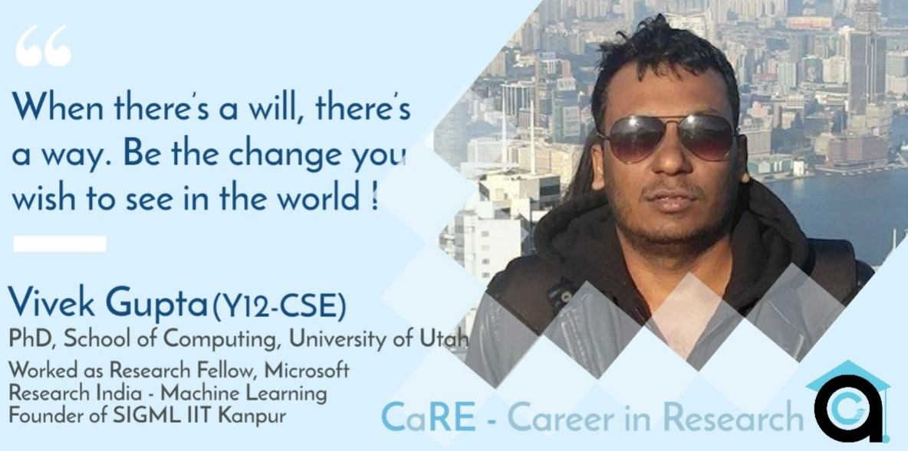

Vivek is a PhD student at the School of Computing, University of Utah. Previously, he was working as a Research Fellow in Microsoft Research Lab, India, in Machine Learning and Natural Language Processing group. He graduated as a dual degree student in the Department of Computer Science and Engineering at IIT Kanpur in 2016. He is broadly interested in research in the field of Machine Learning and Natural Language Processing. He was the first coordinator of Special Interest in Machine Learning (SIGML), IIT Kanpur. To know more about his current research interest, you can visit his webpage at https://vgupta123.github.io.

Short Introduction about your experience at your current institute - How has been your journey so far?
Journey so far has been really good. I never thought that I would end up doing a PhD and that too in computer science. For an academic career, there are a lot of skills required; persistence, patience, dealing with rejections and managing the ups and downs along the way are some of them.
How was your experience at IITK? How has the “tough academic structure” and other opportunities on campus helped you in your journey? Also, alongside this, can you outline experiences and how they helped in deciding about and finally, pursuing research.
I did not do particularly well in my 2nd and 3rd year. People often say that if you don't do well initially, you won't perform well further in your career - this is not at all true. I was contracted with Typhoid at the end of 1st year. Due to some unavoidable circumstances, I was dropped from ESC101. Hence my academic state was very bad at the end of 1st year. My family supported me all this while.
In my 2nd year, I completed the prescribed courses as well as the dropped course. During the 3rd year, my mother passed away all of a sudden and this hit me hard. I went into depression for the next 2 semesters and my CPI dropped drastically (down by 1 point!). Thankfully, I had my family's support to cope with it. My first internship was path-changing for me, I was motivated and gradually picked up. I got a PPO after my 2nd internship at Samsung. Then I was confused; should I go with Samsung or should I pursue an academic career! I was never able to totally focus on research; at least I wanted to try out research. So, I decided to go for masters (dual-degree) in IITK (I did not apply outside India as the only criteria for undergrad research abroad is CPI, which was not that great in my case!). During my masters at IITK, I met many good professors (especially Professor Harish Karnick, who was my Masters Advisor), I went for an internship at Flipkart, and developed a new system for them. My masters study completed on time, I published and this gave me the motivation to start the SIGML group. SIGML was a totally new experience. When you're stuck with academia, life can be a bit monotonous, so doing something different is always good, it acts as a diversion. I interacted with researchers, academicians, and helped organize talks. Professor Purushottam Kar and Professor Piyush Rai helped a lot by holding talks and lectures. Thus, now I had a paper; had already established a group and had ended up with a Microsoft research internship; with this, my career boosted again. If you don’t get success early on, don’t be depressed, just work hard, have perseverance and in the course of graduation, you’ll pick up soon. Stay confident and motivated. However harsh your career may go, you can always expect a come back.
How was the research exposure that you got on campus (IITK)? Can you briefly outline the work that challenged you the most? Where did you pursue your intern in the 2nd and 3rd/4th year at IITK? How was your experience? You may relate to how it helped in deciding about and finally, pursuing research
I started working with Prof. Karnick in my 4th year. Initially, I did a UGP project and it did NOT go well (got a B grade!) but I started liking research. If you're confused whether you should go for research or not, go for an undergraduate project under a professor; this acts as an entry point to research. I did another UGP; it was better than the previous one, but we did not get any new ideas from this one. Flipkart contacted me under a new academic collaboration, to solve real world problems in e-commerce using research in NLP. Since I didn’t get any satisfactory reply from around the 100 universities and professors I had mailed, I decided to go with the Flipkart internship. I got a great mentor there! In research, you should try to take lead yourself and not simply wait for your advisor to help you out. You may feel stuck in research for months, at that point, keep going on and DON’T GIVE UP!
My 1st internship was at Synopsis, during my 2nd year. It was mostly about bash scripts writing. I learnt how to interact with people in a company. (Ask your mentor, managers, ask other people as well; don’t hesitate). I also learnt about data visualisation.
My second internship was at Samsung, it was a product oriented research internship (wherein you do research not with the aim of publishing a paper, but building a product and patenting it) Interestingly, I had to read biological articles! The internship was not all work, I enjoyed it a lot as well (ate a lot of food!)
My third internship was at Flipkart, which I’ve already talked about. At that time, it was a start-up enterprise. In a start-up environment, you have to do a quick fix! (Creativity is required as well)
Having a diverse team is very crucial. (Never hesitate to take up HSS courses)
Finally, what persuaded you to continue your studies after your stay at IITK? How was your experience working in Industry?
I converted to a dual-degree because I wanted to explore the field of research. Apart from that, I got to interact with a lot of researchers, professors, and students through SIGML. The Microsoft research internship gave me a better research experience. At many times, you might be asking yourself "Why am I even doing research?" Also, the pay is very less as compared to a development job. However, there are many perks as well, you can work at your own pace and at the end, you’ll have a paper with your name on it (you don’t have that advantage with a development job!) Dealing with rejections is quite important; stay optimistic, always! Getting support from family is very much needed.
Computer Science being a very broad discipline, how did you pinpoint your interests to Natural Language Processing (NLP)?
Upto 4th year, I didn’t have any particular interest. The Microsoft internship, a Machine Learning course by Prof. Karnick, and the 2 UGPs, made me realise that ML is a very interesting field, but it's quite difficult as well. Having good mentors is important. In my opinion, doing UGPs is particularly helpful, don’t jump to advanced courses, as you may not like it coming all of a sudden. While doing a course, your major aim should be learning and not just to pass the course with a good grade. Trying new things and making the best efforts is crucial. IITK has a very strong faculty and plenty of opportunities for undergraduate students.
What was your experience in the admission procedure?
The sole criteria for judging people who apply for Ph.D. directly after B.Tech. is CPI (LORs are based on CPI, so it all boils down to CPI). If your CPI is not good, then you should consider working as a Research Assistant (RA) under a professor, or working in some Research Lab (basically, to build up your Research exposure). Then your LORs will matter a lot. Never think that if you have a bad CPI you won’t be able to get into Research. (My B.Tech. CPI was 7.6 and M.Tech CPI was 9.4!) LORs are very crucial, so keep building your research profile. Your resume should be crisp and clean. Always ask your mentors to review your resume. Write your SOP very well! Your SOP should contain the work you did with the mentors who wrote your LORs. LOR is a validation of your SOP. Keeping the amount of details optimum is necessary. My preparation for GRE and TOEFL was pretty standard. Priorities for the application procedure:
1. LORs
2. Selecting the Institute where you’ll apply
3. SOP and resume
4. GRE and TOEFL
If your profile is very good (you’ve been published by top conferences, have a great CPI and recommenders) then applying for top schools is preferred. Ask your mentors as to which schools you should apply to. Limit the no. of applications to 10. If you’re not very confident about your profile, definitely apply to medium schools as well. Apply to schools with good faculty! Always apply to safe schools as well. Build up a personal academic website. Write emails to people with whom you want to work. For interviews, they’ll test your knowledge, research skills, your paper and how you can improve their work.
How do you compare the research culture at IITK as compared to that at the University of Utah?
At IITK, the research culture had just started to improve, but I had graduated by that time. My experience at MSR was amazing, I improved upon my thinking abilities. I enjoyed a lot at MSR, and watched the Olympic Games as well.
After coming to Utah, life has been a bit challenging, as I had to settle down, do my own laundry, cook food on my own and study as well. My past experience at IITK and MSR helped me settle down quickly. IITK had a culture of going for "good papers" and not just "papers", and my mentors would push me for working on bigger problems. Research culture is better in the USA as compared to India, funding is better and so is the pay. But the research culture in India is improving at a very fast rate, especially in the IITs and IISC. In the USA, it’s more like an employee-boss relation rather than a student-teacher relation. The course load in IITs is so heavy, that students usually do not get the option to try out research, the curriculum should include more optional courses and be made less rigorous. Try attending research seminars and talks, as it includes the summary of a person’s year-long work. Try to bring some novel aspects to your project also. Time management is extremely important, undergraduates have a lot of time, they should use it wisely!
How did you see research as a career then? How has your mindset changed about it since you joined your current institute?
My mindset has definitely changed.
1. The most important thing in Research is perseverance, it is neither hard work, nor intelligence.
2. Never be afraid of rejection, failure is a part of life and you must never be dejected by it. (You’ll face a lot of rejections in research!)
3. Speak less and listen more. Listening to other’s work and their achievements gives you more insight into other areas of research.
4. Good work takes time, be patient and don’t get frustrated often.
5. Stay confident and motivated all the time, this is very important.
6. Always render your service to your community, alma mater, society, family. Have a better outlook in life.
7. Family, friends and your mentors are really important, they give you the support you need in your career and life in general.
8. In the Lockdown period, try helping your mother in simple chores, help your younger siblings with their studies, Try learning new skills also. (Instead of binge-watching Netflix, try learning how to cook!)
Many students face a dilemma deciding whether they are really interested in research or not, what are your suggestions on this?
Internships really help you distinguish your true interests from the other ones. Starting with your 2nd year, keep taking up UGPs. Most of the internships are development based, so you’ll be able to see if development interests you more or research, parallelly. Even if you don’t get enrolled in a UGP, try working on a project without a UGP (the prof will usually take you in). Do ask your prof to connect you with a Ph.D. student working on the project. Having a good mentorship is important as well. Be frank with your mentor. Utilise your internship and UGP very efficiently.
Useful Tips :
Try to begin your mornings on a positive note! Physical Exercise is very important. Having diversion is helpful; don’t put all of your attention to one thing. When there’s a will, there’s a way. Be the change you wish to see in the world! Don’t complain about not having opportunities. Start slow, and gradually you’ll pick up. Always focus on the positive work and less on the negative aspect in the current unfortunate situation. Be careful about your health. The pandemic has enabled people to work on socio-economic disparities as well. In Academia the good part is FREEDOM. In a start-up, you’ll learn things really quickly, and much "innovision" is required. NGOs are a great way of helping people and rendering service to the community.